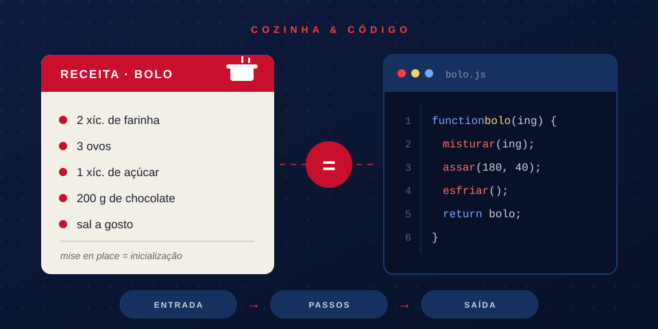
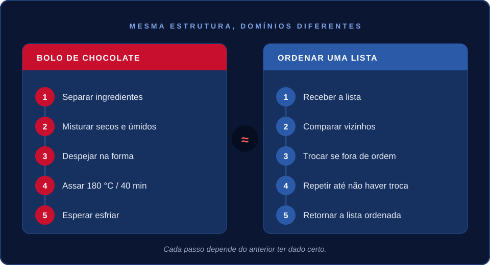

Fundamentos de Programação
O que os programadores aprendem com os cozinheiros
Toda receita é um algoritmo. Todo cozinheiro já debugou um prato salgado demais. A diferença é que a cozinha ensina isso antes de você abrir um editor de código.

Ingrediente é variável. Modo de preparo é função. Quem já errou o ponto do arroz sabe exatamente o que é um bug de lógica: os passos certos, na ordem errada, ou com o valor errado numa das entradas.
Você não precisa saber programar para pensar como programador. Se você já cozinhou seguindo uma receita, você já executou um algoritmo — só não tinha esse nome.
Receita é algoritmo, sem eufemismo
Um algoritmo é uma sequência finita de passos que transforma uma entrada em uma saída. É isso, sem mistério. Agora leia de novo pensando numa receita de bolo: farinha, ovos e açúcar entram (entrada), você segue os passos na ordem certa, e um bolo sai do forno (saída).
A receita não deixa dúvida sobre o que fazer primeiro. Ela não pula do passo 1 pro passo 5. E se você trocar a ordem — assar antes de misturar, por exemplo — o resultado quebra. Código funciona pela mesma lógica: trocar a ordem dos passos muda o resultado, mesmo usando os mesmos "ingredientes".
"Mise-en-place is the religion of all good cooks."
— Anthony Bourdain
Kitchen Confidential (2000)
Troque "cooks" por "programadores" e a frase continua fazendo sentido. Organização não é frescura de quem tem tempo sobrando — é o que separa um prato (ou um sistema) que funciona sob pressão de um que desmorona na primeira correria.
Os ingredientes são as variáveis do prato
Três ideias da cozinha explicam metade da programação básica. Nenhuma delas exige forno nem IDE — só atenção.
1. Ingredientes = variáveis
"2 xícaras de farinha" guarda um valor que pode mudar: hoje são 2, amanhã você dobra a receita e são 4. Uma variável faz exatamente isso — guarda um valor que muda ao longo da execução, sem mudar o nome nem a receita em si.
2. Mise en place = inicialização
Separar e medir tudo antes de ligar o fogão é inicializar o estado do
programa antes de rodar a lógica principal. Cozinheiro que começa sem
mise en place para no meio pra procurar sal. Programador que não
inicializa os dados direito trava no meio da execução — só que o erro
aparece com um nome mais assustador, tipo NullPointerException.
3. Tempero a gosto = parâmetros configuráveis
"Sal a gosto" é um parâmetro com valor padrão que você pode sobrescrever. A receita funciona sem você mexer em nada, mas também aceita ajuste. É a mesma ideia por trás de uma função que roda bem com os valores default, mas permite configuração pra quem sabe o que está fazendo.
Sinais de que sua receita — ou seu código — vai dar errado
- Ingrediente medido "a olho", sem anotar a quantidade real usada;
- Passo pulado porque "acha que lembra" de cor;
- Receita copiada de três fontes diferentes e misturada sem critério;
- Fogo alto pra "acelerar" o processo;
- Provar o prato só no final, nunca durante o preparo;
- Não anotar o que funcionou, pra repetir da próxima vez.
Bolo de chocolate vs. ordenar uma lista: passo a passo lado a lado
Teoria convence pouco. Então aqui vão dois algoritmos, um de cozinha e um de código, resolvendo problemas diferentes com a mesma estrutura: uma sequência de passos que depende do passo anterior.
Receita: bolo de chocolate
- Separe os ingredientes: farinha, ovos, açúcar e chocolate.
- Misture os secos com os úmidos até ficar homogêneo.
- Despeje a massa na forma untada.
- Leve ao forno a 180°C por 40 minutos.
- Espere esfriar antes de desenformar.
Algoritmo: ordenar uma lista
- Receba a lista de números desordenada.
- Compare cada par de vizinhos.
- Troque de posição os que estiverem fora de ordem.
- Repita a comparação até não haver mais trocas.
- Retorne a lista, agora ordenada.
Cada passo depende do anterior ter dado certo. Pule um, e o resultado desanda — seja o bolo, seja a lista. Nenhum dos dois algoritmos "adivinha" o que fazer: eles só executam, na ordem, o que foi definido.
Seguir a receita à risca ou improvisar?
Seguir a receita exatamente como está escrita é determinismo:
mesma entrada, mesmos passos, mesmo resultado, sempre. Improvisar — forno
mais fraco que o normal, faltou um ovo, a fôrma é menor — é lidar com
edge case: uma condição fora do esperado que o algoritmo
também precisa prever, com um if a mais ou um ajuste de
parâmetro. Cozinheiro bom sabe quando seguir a receita e quando ajustar.
Programador bom também.

Regra do chef
"Prove antes de servir." Aplicado ao código: rode antes de dar deploy. Nunca confie que "deve estar funcionando" — teste, prove, só depois sirva pro cliente.
Grupo Optimus
Este artigo foi produzido pelo Grupo Optimus como atividade acadêmica.
Integrantes

André Luis Castelhano
Cauê Vergopolan Hanzen
Guilherme da Cunha Bonetto

Carlos Henrique da Silva Menger Neto

Pedro Pimentel Perdomo
Mentora

Zainab Ahmad Al Ghazaoui
Mentora